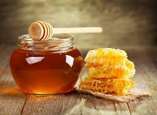
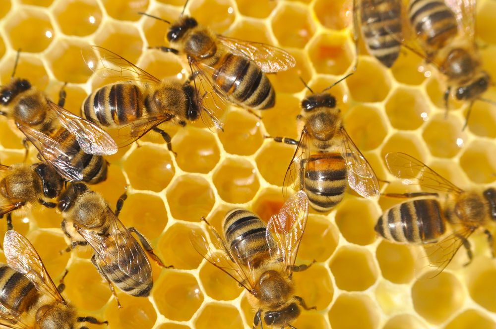

Бджоли раді цвіту, люди раді меду!
 Мед - це в'язкий продукт різної консистенції, який містить кілька сотень хімічних речовин і сполук (вітаміни, фолієва кислота, вуглеводи), що заготовляється бджолами і деякими іншими видами комах для власного корму взимку. Мед - це ферментований нектар квітів, рослин і деяких комах, що харчуються соками рослин, який був зібраний бджолами, частково переварений в їх зобі, пережований робочими бджолами, з нього випарувалася зайва волога і він був поміщений на зберігання в стільники, з додаванням природних консервантів, які допомагають йому зберігатися протягом д овгого часу. Крім бджіл, інші комахи можуть збирати мед теж (оси ,шершні), але бджолиний мед вважається найбільш корисним і поживним.
 Мед є основою харчування вулика, число особин якого може бути до 60 тисяч. Кожен рій за рік з'їдає від декількох десятків до 100 меду кілограм, а за 1 день продуктивнийполітний Вулик здатний зібрати 10-20 кг нектару, з якого після обробки вийде 5-10 кг меду. Щоб вийшов 1 кг меду, одній бджолі треба зробити виліт на 1... 10 мільйонів квіток. Разом з медом бджоли приносять у вулик квітковий пилок і складують. З її грудочок виходить перга-джерело білкового харчування бджіл. Медом і пергою харчується більшість бджіл всередині вулика (трутні-самці, молодняк, робочі польові бджоли і робочі бджоли всередині вулика, які підтримують градустемператури в ньому). Виняток становить матка, що відкладає яйця: харчування її організму в основному становить маточне молочко, що виділяється спеціальними залозами. Ще одні залози виділяють бджіл натуральний віск, з якого вони будують стільники і яким їх запечатують. Таким чином, весь свій раціон і весь будівельний матеріал для обслуговування вулика бджоли добувають і переробляють самі. Недолік меду може бути прічінойгібелі бджіл або сильної ослабленості після етапу зими, так само, як і харчування падевим медом (це повинен контролювати Пасічник). Виділяють дві основні різновиди меду Квітковий, одержуваний з нектару медоносних квітів. Найкращий урожай, на якому побудований весь медовий бізнес світу. Падевий, одержуваний з солодких виділень інших залоз комах, голок хвої, стебел рослин. Такий мед іноді використовується людьми для готування і замість цукру, але для зимового харчування колоній бджіл і запасу він не підходить зовсім, інакше бджолина сім'я може загинути через хвороби.
Ви зможете вибрати відповідні товари:
Internet-beekeeper shop@.com.ua